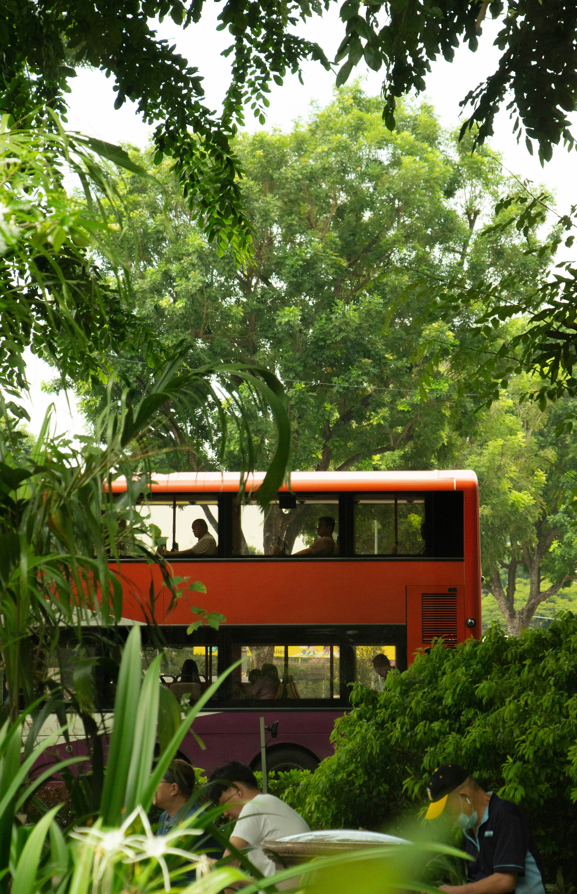

Taniti's regional airport welcomes small jets and propeller aircraft, offering convenient daily connections from nearby mainland hubs.
A weekly small cruise ship docks in Yellow Leaf Bay, allowing visitors to arrive by sea and explore the island overnight.
Rent bicycles from local vendors to explore at your own pace, helmets are required by law for all riders.

Public buses operate daily from 5 a.m. to 11 p.m. within Taniti City, with private buses serving other parts of the island.
Taxis are readily available in Taniti City, and rental cars can be reserved through a local agency near the airport for flexible travel.